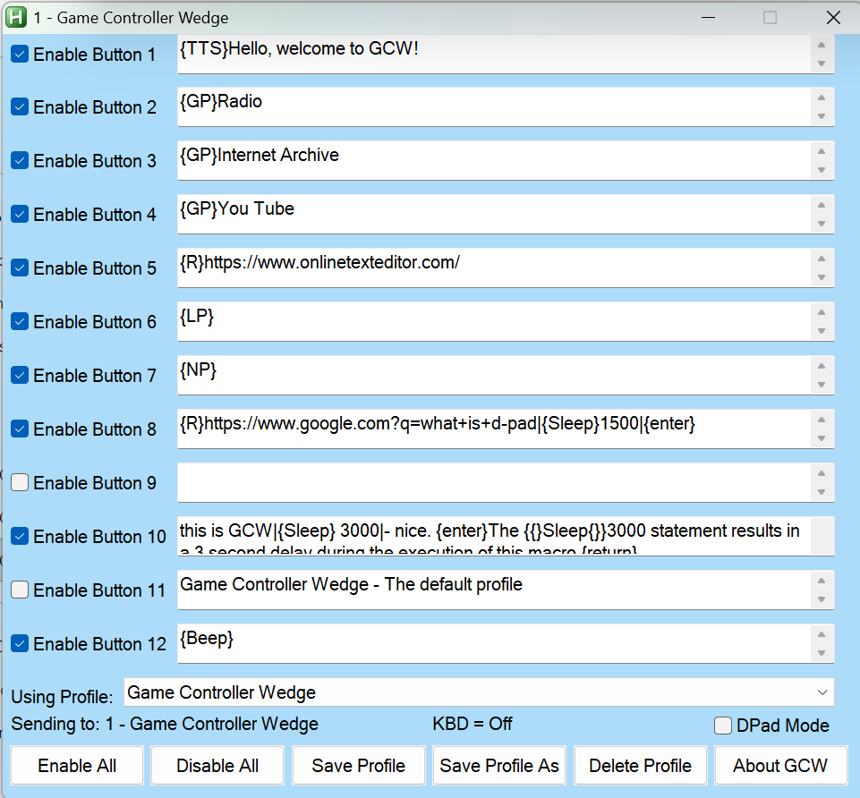
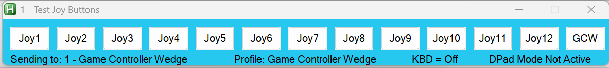
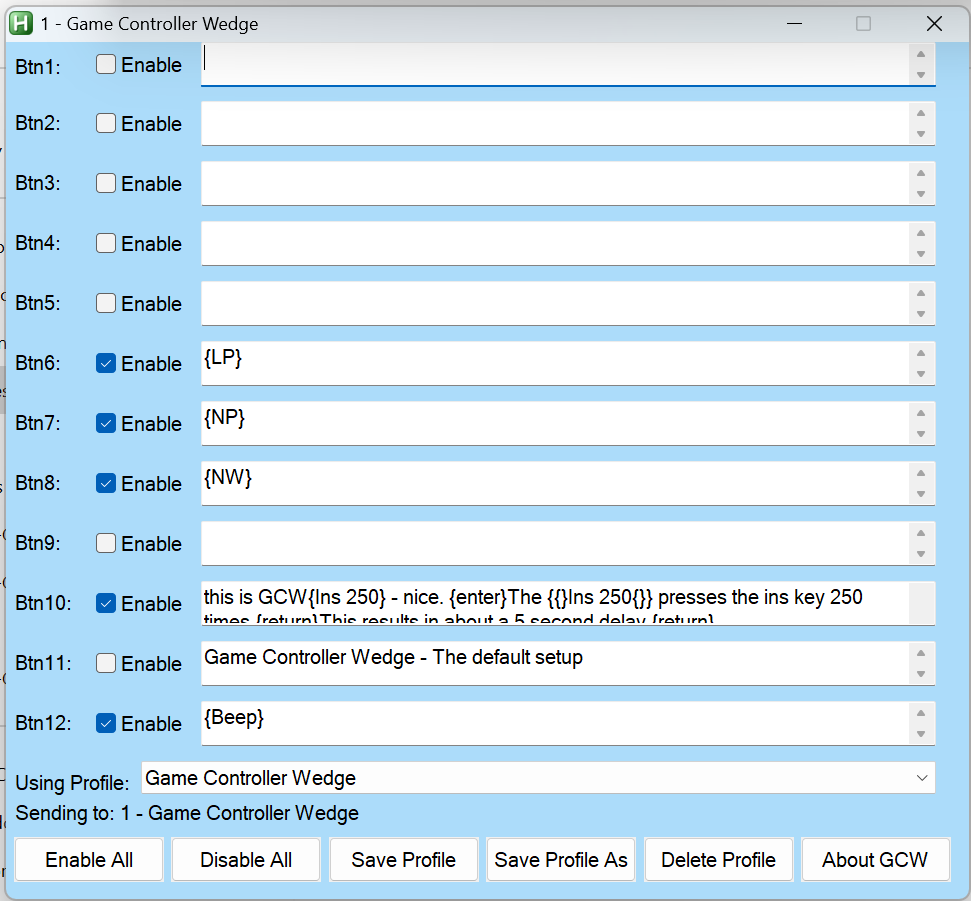
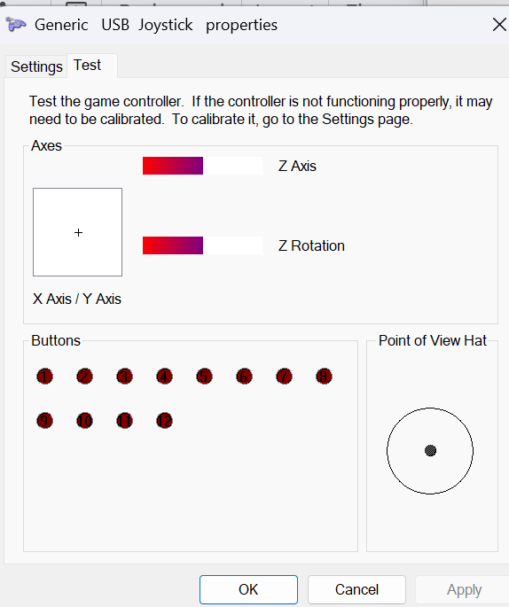
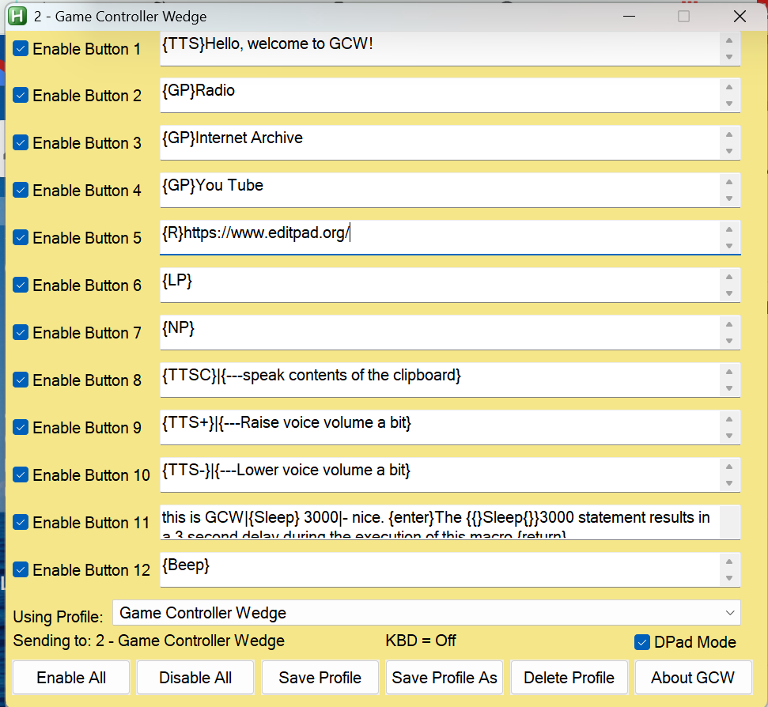
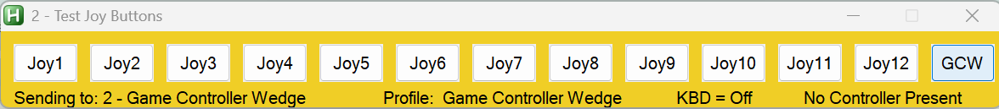
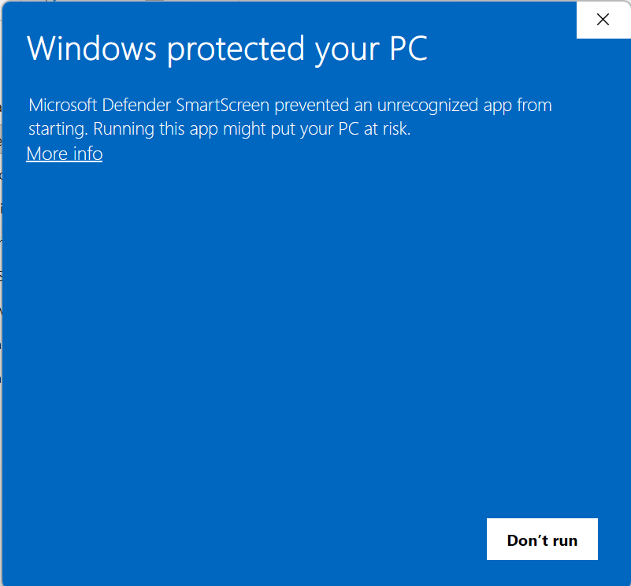

GCW Help
Game Controller Wedge Description
By Jim Luther
https://github.com/jamjolu/Game-Controller-Wedge
GCW is a tool for creating and executing macros
that are triggered by pressing game controller buttons. It is
very much like
Joy2Key or
XPadder, but it is easier and
has very capable macro abilities. With GCW you type a macro into
a text field, and you are ready to try it.
Is GCW useful for gamers? Maybe not. I think GCW responds too
slowly for many gamers. But, it can do a lot of typing,
clicking, program launching (and more) with a single button
press which could be valuable to those who wish to minimize the
effort to complete repetitive tasks, or as a tool for making
activities more accessible and less tiring. It is possible that
some gamers may find it useful.
With GCW you can compose up to 12 macros that you can save as a
“profile” that you name. You can create as many profiles as you
like.
Built-in commands allow you to run programs, open folders and
known file types, open web pages, toggle through open windows,
open active windows, and change profiles, click targets, and
more.
GCW is based on
Autohotkey
V1.1. The well known Autohotkey (AHK) scripting tool
offers means for emulating keyboard and mouse actions,
interacting with windows, and much more. It is frequently used
to automate repetitive computer tasks.
Table of Contents:
1.
GCW /windows- an overview
2.
More about the GCW
windows
3.
What if I have
2 controllers?
4.
Anatomy of a macro
5.
More macro examples
6.
GCW Special Commands
7.
Combining
macros and commands
8.
Limitations/Contact
9.
Where can I
get a 12 button gamepad?
10.
How can I get GCW?
GCW Windows:
This is the main GCW window where you define your macros, or issue
commands.

GCW supports up to 12 macros you define which are triggered by
joystick or gamepad buttons 1 through 12.

This smaller Test Joy Buttons window lets you test your
macros/commands without a game controller. This window, when open,
sits on top of other windows.
Use the Game Controller Control Panel in Windows to see how your
game controller buttons are mapped. (Click the Properties button.)
 
A screen capture of the main pop-up for the Windows Game
Controller Control Panel and an image of the Properties pop-up
associated with the Game Controller control panel in Windows
You can see those details and test your buttons in the Properties
view.
Another helpful tool is this AutoHotKey script that can give you
additional information about a game controller including
which
game controller number your controller identifies as:
https://www.autohotkey.com/docs/v1/scripts/index.htm#ControllerTest
(Click "ShowCode". Click the "Download Code" button in
the upper right corner of the box that opened.
This is an AutoHotKey V1.1 script.)
Why use game controller buttons to launch macros?
Because game controller buttons are unlikely to cause things to
happen in typical Windows applications - other than games.
More about the GCW
Windows
- You can enable/disable any or all game controller buttons
for this profile using the Enable check boxes, or
the Enable/Disable All button.
- You can save changes you make with the Save Profile
button. Be sure to Save any changes you want to keep
before loading a new profile or exiting GCW
- You can create a new profile with the Save Profile As
button.
- You can remove an entire profile with the Delete
Profile button - except the default Game Controller
Wedge profile
- You can select any profile from the Using Profile:
drop down menu, or via the {GP} Special
Command
- The Sending To: label (most times) shows
the title of the application window that will receive your
macros
- About GCW opens this help file
- The GCW button in the Test Joy Buttons window
brings the main GCW window into the foreground
The
DPad Mode checkbox permits users to additionally
employ the D-Pad on a game controller to activate macros 9, 10, 11
and 12 as: Up, Right, Down and Left on the DPad respectively. This
allows game controllers with fewer than 12 buttons to have more
macro activation options. The “POV hat” as it is shown in the
Windows Game Controllers control panel is mapped to the D-pad on
some game controllers. On other gamepads, you may need to
activate a special mode to get it to work with GCW. The
DPad
status is shown in the “Test Joy Buttons” window where:
- DPad Not Active means that the DPad Mode box is
unchecked.
- No Controller Present means DPad Mode is checked,
but no there is no game controller plugged in that will work
with this version of GCW.
- DPad Status: -1 means DPad Mode is
checked, and no direction button is pressed.DPad Status:
0 means the DPad Mode is checked, and the Up button
is pressed.
- DPad Status: 9000 means DPad Mode is checked, and
the Right button is pressed.
- DPad Status: 18000 means DPad Mode is
checked, and the Down button is pressed.
- DPad Status: 27000 means DPad Mode is checked,
and the Left button is pressed.
GCW responds only to Up, Right, Down and Left. button presses on
the DPad. Buttons 9, 10, 11 and 12 remain active regardless of
DPad Mode.
If you make a change to your DPad Mode setting and you
want the change to persist between sessions, make sure to press
Save Profile.
And now there
are 2 GCWs: one for Controller 1, and one for Controller 2


Controller 1’s settings and test buttons are in blue windows as
shown here, Controller 2 windows in yellow
Launch GCW.exe or GCW.ahk for Controller 1
Launch GCW2.exe or GCW2.ahk for Controller 2
The exe versions, GCW.exe and GCW2.exe, have blue and yellow icons
respectively.
Anatomy of a Macro
GCW uses
AutoHotkey and requires that you adhere to
the AutoHotkey conventions for the
Send
command (at AHK site)
An Example:
^p{enter}
This example opens the print dialog using the Ctrl-p key combo in
many programs, followed by the Enter key which is a special
character. You can also use {return} for the Enter key
Pressing and holding the Control key for the key that follows is
denoted by the ^ character. Keys like Alt, Shift, Ctrl and the
Windows key are referred to as modifier keys.
Special characters like tab, space (at the end or beginning of a
macro), or backspace all need to be enclosed in braces as in:
{left} for left arrow. Or,
{F11} for the F11 key.
See
more about including special characters in your macros here
at the AHK site.
Here is the list of modifier keys: (
More
about modifier keys here at the AHK site)
# = Windows
key
! =
Alt
^ =
Control
+ = Shift
You can combine modifiers as in:
^!{down} which reads as
Ctrl-Alt-(down arrow). This combo may turn your display upside
down on some Windows computers!
^!{up} can restore your
display.
More macro examples
A name and address fill in:
Fred{tab}Flintstone{tab}345 Cave
Stone Rd.{tab}Bedrock{tab}NY{tab}12345{enter}
You can press a special character key multiple times by adding a
number to the special character:
{tab 3} (3 tabs).
Use the insert key to create around a 3 second delay: Now
{ins
150} Later (There is also a
{SLEEP} command covered
in the next section.)
GCW sends keys faster than you can type, so delays may help a
program to catch up to your macro.
You can click at particular screen coordinates:
{click 150,
600}
You
can do other {click… commands} as well as seen at the AHK
site.
To help you to determine your cursor position, GCW has a built-in
hotkey sequence:
Alt-m opens a tooltip note with the
coordinates. The coordinates are also copied to the clipboard. Use
Ctrl-Alt-m to hide the tooltip note.
Raise the volume a little bit:
{volume_up}
Select the browser back button:
{browser_back}
Again,
there is much more about what you can send can be found here
at the AHK site
Special Commands
In addition to the standard AHK special characters, GCW offers its
own special commands.
Aliased AutoHotkey Commands:
{R} - invokes the AHK Run command. The
{R} command can open websites, programs, known file types and
folders as long as you follow the {R} with a correct file path,
or URL. Try this example: {R}https://duckduckgo.com/
{SLEEP} - Allows you to pause GCW activity to allow for
programs to open, and other processes to complete before
reactivating GCW to continue sending macro text or commands. To
do this, follow the {SLEEP} command with a number representing
milliseconds. So, {SLEEP}5000 would pause GCW activities
for 5 seconds.
{AW} - Activate an open Windows window. This command
allows you to jump to a window based on any text that appears in
the title bar of a window. To do this follow the {AW}
command with some text that matches text in the window title.
The text does not have to be the complete title, just any part
of it. For example, {AW}Calc will activate the
Calculator app (if it was open). Just be sure that the text is
unique to the window you hope to activate.
{S} - Suspend other GCW buttons until the macro for this
button has finished. Place this special command at the beginning
of your macro and it will prevent other macros from executing
concurrently.
{BEEP} - Makes a short toot sound.
GCW Commands for listing existing profiles and windows:
{LW} - Displays a list of open windows.
{LP} - Displays a list of your profiles.
GCW Specific Window Management
{TJB} - Opens the Test Joy Buttons window if it was
dismissed or minimized
{GCW} - Brings the main GCW window into the foreground
GCW Commands for Profile and Windows Navigation:
{GP} - Load a named profile where the
exact profile name appears directly after the {GP} command. For
example,
{GP}Game Controller Wedge will load the default
profile. You could use this command to make a table of contents
profile that links to other profiles.
{Home} - Return to the default Game
Controller Wedge profile
{NP} - Loads the next profile on your
list.
{PP} - Go to the previously opened profile - like the ←
button on a browser.
{NW} - Brings the next open Windows window into the
foreground - ready to receive macros. This works, but not always
in the order you expect or hope for.
Combining
Commands and Macro Strings!
You can combine special commands and macro strings in any of the
12 macro slots by separating the commands and/or macros with the
pipe character:
|
Commands and macro strings can be combined in any order, and you
can include as many as you want (I really don’t know for sure what
the limit is.) The actions will be carried out in left to right
order, triggered by a single button press.
For example:
{S}|{R}Calc|{SLEEP}1000|{AW}Calc|55{+}66{enter}
You can interpret this combo macro example as:
First, it prevents other macros from interfering with this one.
Then it opens the Calculator app, waits 1 second, makes sure the
calculator window is active, and finally it requests the result of
55 + 66.
Note that the + sign has to be enclosed in braces because it is
also a
special modifier character.
Add a comment to your macro! - You could combine
macros as in:
^w|{--Close browser tab} This macro
closes the current browser tab and is followed by a pseudo command
that acts as a comment. In this case, pseudo command is ignored
because it is not a known special command, special character, or
special modifier. The double minus sign is not used in special
commands and acts as a visual cue.
Limitations / Contact
GCW and AutoHotkey can emulate keyboard and mouse actions and send
them to most active windows, or the Windows operating system. But
there are applications that it will not be able to interact with
at all, or not very well.
In particular, in Windows 11 the new Notepad behaves really
weirdly. If you send text to it from GCW or other AutoHotKey
scripts, it frequently misses some of the sent characters. This is
a quirk in Notepad I believe is related to the AI functions it now
offers. I believe the AI function periodically interrupts the
stream of inputs from AutoHotKey to Notepad. You can always
download any one of the many Notepad alternatives to test your GCW
macros.
Also, I was unable to use the {click} command to reactivate Voice
Access in Windows 11 in “Microphone off” mode. Nor would GCW
respond at all while Voice Access was “Listening”. It seems that
Voice Access will totally preempt GCW (and AutoHotKey).
You
can find out more at this AutoHotKey community post if you are
having issues controlling or sending something to a window with
GCW.
You can contact me at:
j a m j o l u @ g m a i l . c o m
(remove the spaces) and I will attempt to suggest a solution or
workaround. I also welcome comments or suggestions.
Where can I
get a gamepad with 12 buttons or 12 - 3.5mm inputs?
- 8BitDo
Ultimate 2C Wireless Controller - Many USB
gamepads available on Amazon will have at least 10 buttons.
This wireless one looks like it has at least 12 for around
$25:
- The
XBox Adaptive Controller - 19 - 3.5 mm inputs,
re-mappable, $100 - Also available at Best Buy, Target…
- Haute42
Leverless Controller Arcade Stick, buttons only
controller, $48, Amazon
- 8Bitdo
Zero 2 Bluetooth Gamepad Keychain Sized Mini Controller
- Has less than 12 buttons, but includes a DPad,
wireless, small game controller, $20.
- EG
Starts DIY Game Controller Kit -Make your own
arcade style game controller by putting this stuff in some
kind of box with no soldering! - $26
Amazon prices change all the time, so consider the above prices as
approximate.
Item 1 is a wireless controller, but not
Bluetooth, that has a familiar layout and a decent price.
Item 2 is the well known XBox Adaptive Controller that comes
with its own remapping app to assign gamepad buttons of any of
the 3.5mm inputs. The inputs are standard for common ability
switches like the Ablenet Jelly Bean or the Orby Switch
Item 3 looks like it is based on the same or similar hardware as
many other "Leverless" controllers. They all use swappable
keyboard type keys for buttons, but no inputs for 3.5mm ability
switches.
Item 5 - Carry your game controller in your pocket. It looks
like it can support all 12 macro slots in DPad Mode.
Item 6 -A low cost, DIY option that lets you play with the
button layout as you please. It comes with 10 buttons, a USB
controller board, wires with connectors to connect switches and
the USB board, and a digital joystick.
I have to admit that I have not tried any of them.
How can I get GCW?
Go to the Github page:
https://github.com/jamjolu/Game-Controller-Wedge
Click the green “
Code” button.
Click the “
Download ZIP” option
Once downloaded,
extract the zip file (right-click and
choose “Extract all”.)
Look inside the folder “
Game Controller Wedge-main”.
Copy the inner folder “
Game Controller Wedge-main” and
paste it wherever you like.
Inside the inner Game Controller Wedge-main folder you will find
everything needed to run GCW. GCW does not require installation.
Inside the folder you will find both executable applications:
GCW.exe and GCW2.exe. If you double-click either of them you will
likely see:

To be safe you can use your virus protection software to scan the
contents of Game Controller Wedge-main to reassure yourself that
it is OK to run the executable. Then click the “More info” link,
followed by clicking the "Run anyway” button.
-OR- for no worries--
Download AutoHotkey V1.1 installer from
https://www.autohotkey.com/
Once downloaded, open the installer. Then choose the
Express
installation.
After that, you can double-click either of the
GCW.ahk or
GCW2.ahk files to use GCW and not get the worrisome
Windows warning.
Always keep everything in the Game Controller Wedge-main
folder together.